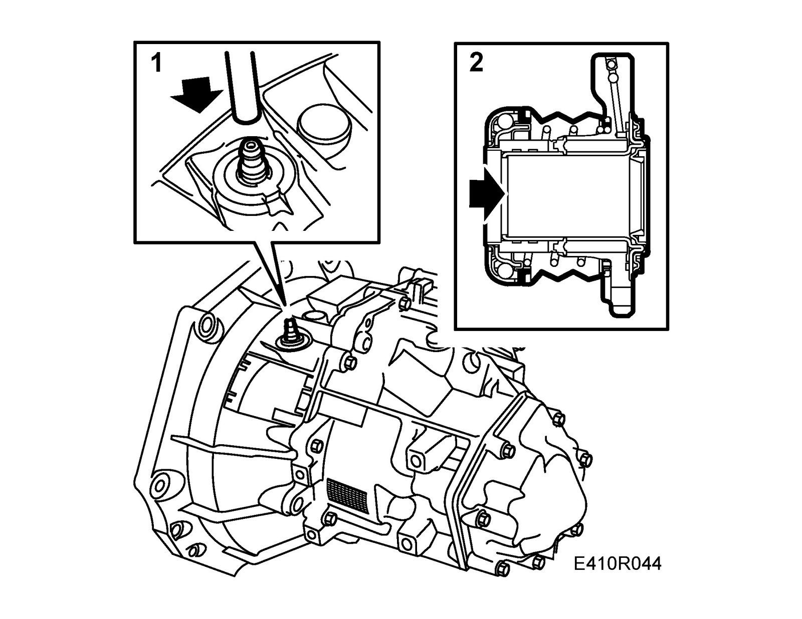
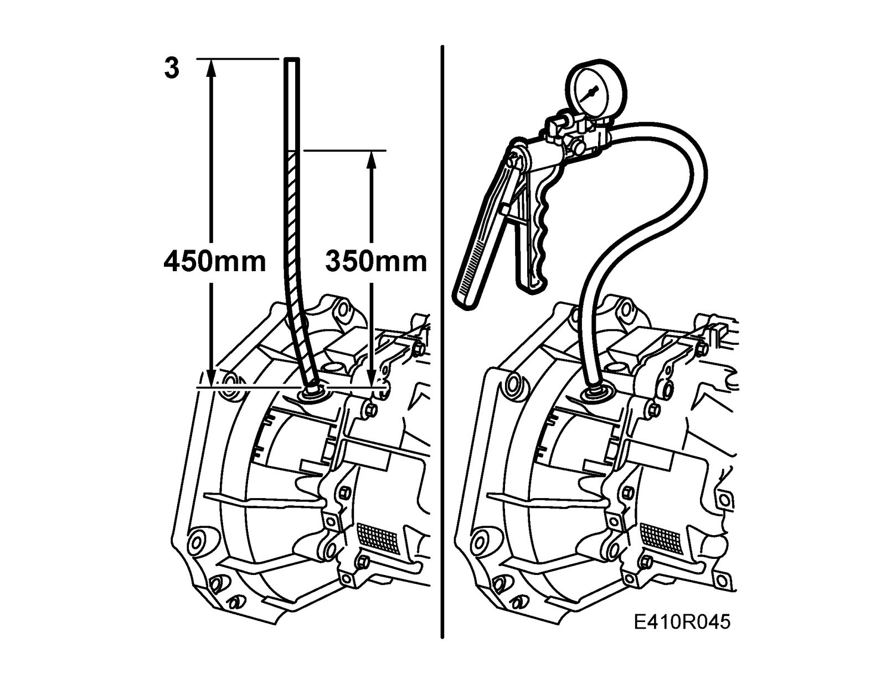

Procedures
Bleeding the slave cylinderRemoved gearbox is assumed. If gearbox is in-car, see Bleeding the clutch hydraulic system in the car. Service and Repair
1. Connect a 450 mm long piece of clean, transparent 8 mm plastic hose to the slave cylinder delivery pipe connection.
2. Fully depress the release bearing once and then release it. The slave cylinder seal remains in its inner position.

3. Fill the plastic hose with brake fluid to a level of about 350 mm.

4. Connect 30 14 883 Pressure/vacuum pump to the plastic hose. Use a 6 mm plastic hose (this is used to provide a tight seal).
5. Pump up pressure until the slave cylinder seal moves out and brake fluid runs down into the slave cylinder. The pressure increases when the seal has reached its farthest point.
6. Remove the pressure/vacuum pump and carefully press in the release bearing to its stop. Note the air bubbles in the plastic hose.
7. Repeat points 5 to 6 a few times until no air bubbles are visible in the hose.
8. Leave the slave cylinder seal in its innermost position. Drain and remove the plastic hose.